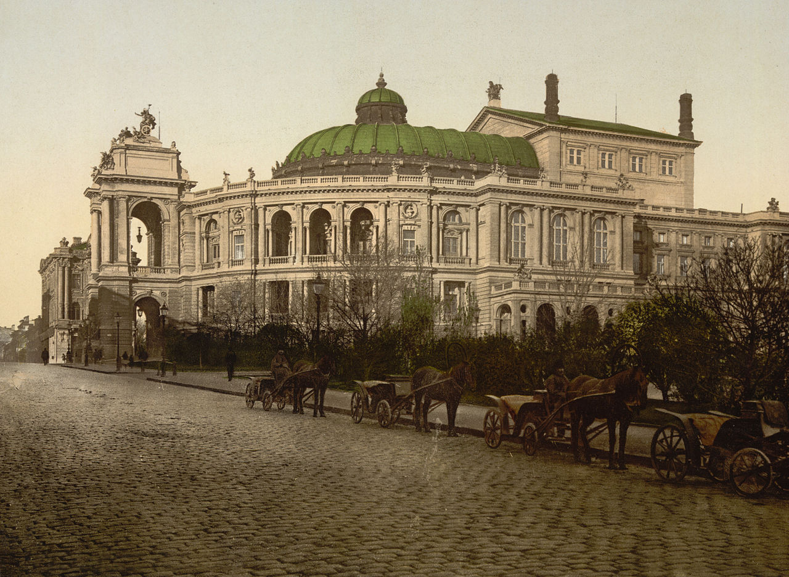
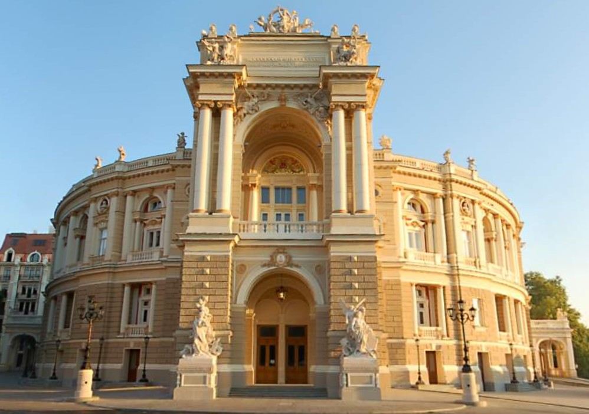

Theatrical Odessa has been leading its history almost since the founding of the city. The Opera and  Ballet Theater can rightly be called an elder among a number of its cultural institutions. Odessa received the right to build a theater in 1804 (becoming the third city with a theater in the Russian Empire), and in 1809 it was already built. The author of this project was the French architect Thomas de Thomon, the author of a number of buildings in St. Petersburg. On February 10, 1810, the grand opening took place. The first performance was Fröhlich's one-act opera The New Family and the vaudeville The Comforted Widow by the Russian troupe P. Fortunatov. The building was located somewhat higher than the modern theater, closer to the Palais Royal, and was perceived as a monument to the young city. The architecture of the building was designed in the classical style, with a portico of the Corinthian order and a pediment facing the building of the then English club (now the Museum of the Ukrainian Navy). The theater accommodated 800 spectators, following the example of the old Italian theaters, 17 boxes were located on three tiers, there were only 44 seats in the stalls. Another 700 spectators watched the performances, standing in the stalls. To correct the shortcomings of the theater building, repeated reconstructions were carried out: in 1820-1822, 1831-1833, 1836, 1857 and 1872. As a result of these reconstructions, a stone wall appeared along the axis of the columns, which made it possible to increase the space of the foyer. On the side of Richelieu Street, a one-story stone vestibule was added. Work on the last alteration of the building ended on December 31, 1872, and on the night of January 2, 1873, the theater completely burned down due to the ignition of a gas burner that illuminates the clock at night. People spent the night in the theater, but none of them were injured.
 The Viennese architects Ferdinand Fellner (German: Ferdinand Fellner) and Herman Helmer (German: Herman Helmer) were invited to create a project for a new city theater, according to whose designs theaters were built in many cities of Austria-Hungary (Vienna, Salzburg, Zagreb, etc.) Project was ready in 1882. The model was the Dresden Opera, built four years earlier by the architect Gottfried Semper, with an unconventional foyer shape that repeated the curve of the auditorium. Almost eleven years passed from the moment of the fire to the laying of the first stone in the foundation of the new theater building. The work was carried out in a contract way from local building materials (mainly the popular Odessa limestone - shell rock). The new theater opened on October 1, 1887. In March 1925, a fire broke out, as a result of which the stage was completely burned down and the hall was damaged. In a short time, the theater was restored and a year later resumed performances. The stage received new technical equipment, two reinforced concrete curtains were installed, cutting off the stage from the auditorium and service premises if necessary. During the Great Patriotic War, the Nazis planned to blow up the theater building during the retreat, but, fortunately, this did not happen. As the inscription on the memorial plaque testifies, it was on the balcony of the theater on April 10, 1944 that the banner of the liberation of the city of Odessa from the Nazi invaders was raised. In 1926 the theater was awarded the title of "Academic". On August 31, 2007, by decree of the President of Ukraine No. 807/2007, the Odessa Academic Opera and Ballet Theater was given the status of "National"